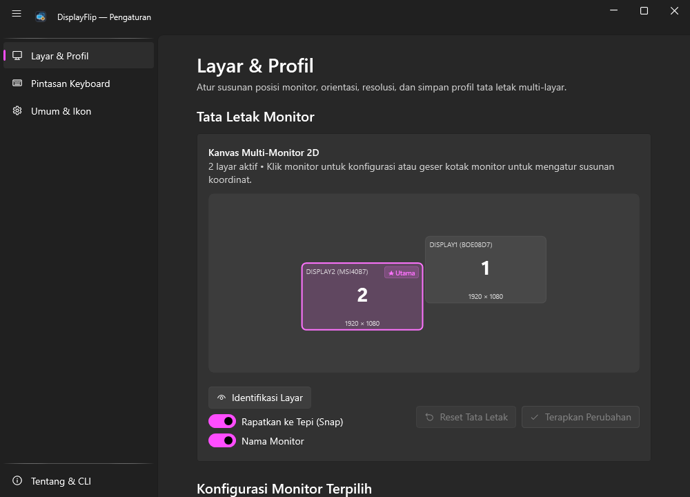

Rearrange Monitors & Switch Display Profiles In One Click
DisplayFlip replaces clunky Windows Display Settings menus with an interactive 2D layout canvas, instant tray quick-swap, global hotkeys, and CLI automation — including smart auto-wake from Solo mode.
Choose Your Windows x64 Package
Lightweight, offline-ready Windows desktop app with no background bloatware or forced account sign-in.
Recommended · DisplayFlip-v1.1.0-win-x64.zip
~3 MB download (6.87 MB executable). Requires Microsoft .NET 10 Desktop Runtime. Ideal for daily startup & tray residency.
Get Framework ZIP on GitHub →Portable · DisplayFlip-v1.1.0-Standalone-win-x64.exe
~74 MB single-file .exe with bundled runtime. Zero dependencies — drop onto a USB drive and run on any Windows 10/11 PC.
Get Standalone EXE on GitHub →Inside DisplayFlip v1.1.0
Inspect every window before installing — complete Dark & Light theme sync, System Tray quick menu, and conflict-safe hotkey recorder.

Engineered for Real Multi-Monitor Workflows
Windows' built-in DisplaySwitch.exe forgets exact monitor coordinates, refresh rates, and primary assignments. DisplayFlip uses native Win32 QueryDisplayConfig & SetDisplayConfig.
Smart Auto-Wake Profiles
Applying a dual-monitor profile while in Solo (PC Screen Only) or Duplicate automatically wakes sleeping displays into Extend mode before restoring exact coordinates.
Graceful Partial-Apply
If an external monitor is unplugged while traveling, DisplayFlip safely configures available screens and reports clear status instead of failing silently.
Proportional 2D Snap Canvas
Drag monitors with magnetic edge snapping, toggleable hardware model labels, portrait/flipped orientation controls, and per-display Hz inspection.
Single-Instance Tray & Hotkeys
Built-in mutex prevents duplicate instances while keeping global hotkeys alive quietly in the notification area.
CLI & Automation Reference
| Command | Alias | Behavior |
|---|---|---|
DisplayFlip.exe --swap | --flip | Swap horizontal left/right positions of primary and secondary displays |
DisplayFlip.exe --apply "<name>" | -p | Apply a saved profile (auto-wakes sleeping displays from Solo/Clone) |
DisplayFlip.exe --solo 1 / 2 | --internal | Switch strictly to Display 1 or Display 2 |
DisplayFlip.exe --extend | --perluas | Extend desktop across all connected displays |
DisplayFlip.exe --list --json | — | Export saved profiles as machine-readable JSON |
DisplayFlip.exe --lang en | --lang=id | Override CLI output language for a single invocation |
Frequently Asked Questions
Should I download the 3 MB ZIP or the 74 MB Standalone EXE?
Choose the 3 MB ZIP if your PC already has (or can install) the free Microsoft .NET 10 Desktop Runtime — it starts fastest and keeps disk usage tiny. Choose the Standalone .exe for portable USB use or locked-down machines without .NET 10 installed.
How does DisplayFlip auto-wake a turned-off monitor from Solo mode?
When you trigger a multi-monitor profile while Windows is set to Solo (PC screen only) or Duplicate, DisplayFlip first transitions the display topology into Extend via Win32 CCD APIs, waits briefly for monitor enumeration, and then applies exact coordinates and primary role.
Does DisplayFlip run in the background or collect telemetry?
Zero telemetry, zero network analytics inside the desktop app. When minimized to the System Tray (or launched with --tray), it stays resident purely to respond to your global shortcuts and tray menu clicks.